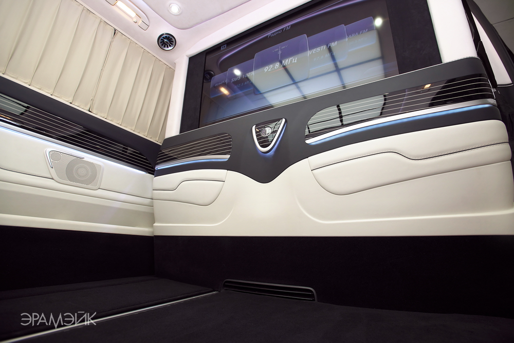

Welcome! You are visiting Aramake Custom Car Shop official website

For over 20 years, the Aramake team has been developing and working with the automotive aftermarket bringing the past and future together. Today with our diverse capabilities we are also servicing the custom automotive, motorcycle and business jet industries. Whether you are looking for the most authentic original style or the wildest coolest custom and resto-mod interiors available in the marketplace.

Visit our shop in Moscow with our selection of the best upholstery and soft trim.

Stocked with quality displays to see, touch and compare, Aramake, muscle car interiors the carrying capacity of our show vehicles enables us to have an ample stock of upholstery and soft trim on hand at these events, accompanied by qualified and knowledgeable sales representatives.
Hand craftsmanship combined with modern production techniques, yield the maximum quality. Single and multiple needle machines speed accuracy with decorative top and straight stitch sewing, perfecting the authenticity of the restoration. Cut pieces are precisely sewn together with straight and French seams to join the essential parts into subassemblies. During final assembly sewing, workers combine inserts, listing, cordwelt, and subassemblies into completed upholstery kits ready for installation.
Popular upholstery kits and interior trim in many colors are maintained in stock ready for immediate shipment. The quantity and selection available ensures quick processing of your restoration requirements. Individual inspection assures all customers of quality workmanship, while computerized shipping equipment aids our experienced staff in speeding delivery across the CIS.